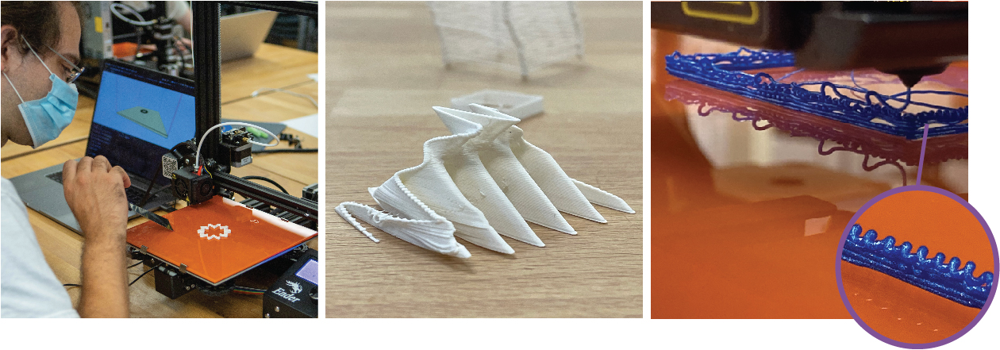

3D Printing with p5.fab!
Blair Subbaraman, blahblahblair.com
slides: https://rb.gy/z8rxzu
The Plan!
- What is p5.fab?
- The ABCs of CAD, CAM, and CNC
- Print Stuff!
- Interactive Printing!
Tensions & Opportunities in Building Community

Tensions & Opportunities in Building Community
a classroom to make experts beginners & beginners experts
Tensions & Opportunities in Building Community
a classroom to make experts beginners & beginners experts
an invitation to digital fabrication/creative code
Tensions & Opportunities in Building Community
a classroom to make experts beginners & beginners experts
an invitation to digital fabrication/creative
code
an obstacle to enact existing skill
p5.fab
Bridging Creative Code and Digital Fabrication
Blair Subbaraman, Machine Agency
socials: @blairsubbaraman
slides: https://rb.gy/z8rxzu
April 13th, 2023